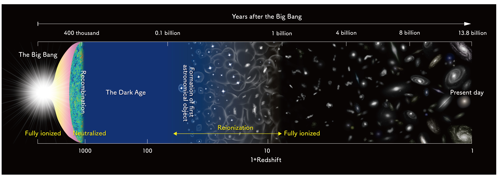
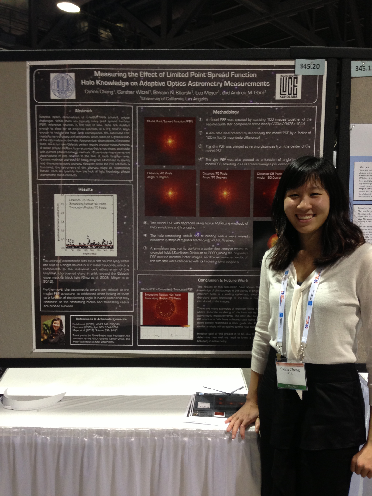

Epoch of Reionization
The Epoch of Reionization (EoR) represents an un-charted phase in cosmic history when the first stars and galaxies ionized the neutral hydrogen present in the early Universe. During this time, matter fell into dark matter potential wells, gravitationally collapsing into the first luminous structures. These sources then emit radiation that ionized the abundant hydrogen in the intergalactic medium (IGM). The subsequent formation of a web of galaxies across an ionized IGM is thought to represent the large scale structure that we observe today.
The EoR has not yet been directly detected, though galaxy observations have begun to place constraints at the end of the epoch. One powerful probe of the EoR is 21cm observations by radio telescopes. These observations make use of the fact that hydrogen is so pervasive in the Universe and it gives off a well-defined energy difference in the form of a 21cm wavelength photon (due to its two quantum states). 21cm experiments aim to detect this emission as a function of time, thereby directly probing the IGM as the EoR progresses.
The following are two major 21cm experiments spear-headed at UC Berkeley, led by Professor Aaron Parsons. Check out my Travel Page to learn about my trip to South Africa to help build HERA!
Hydrogen Epoch of Reionization Array
HERA is an NSF-funded array of 14m dishes located in the Karoo Desert in South Africa. There are currently 19 operational dishes and more are currently being constructed. The full array will have 350 dishes. As a graduate student, I work on many aspects of HERA, including commissioning tasks and data analysis. HERA will be able to observe the entire EoR and not only detect hydrogen in the early Universe but also place important constraints on early structure formation and the characteristics of the first galaxies.

Precision Array for Probing the Epoch of Reionization
PAPER is HERA's precursor, which observed our early Universe from 2011-2015. PAPER consisted of 2m antennas and was built out in stages, doubling its number of antennas each year. PAPER-32 and PAPER-64 have been extremely successful at placing upper limits on the EoR. Much of my work consists of analyzing the PAPER-128 dataset, which should yield a factor of 4 increase in sensitivity than our previous limits. Stay tuned for results soon!
Adaptive Optics Observations of the Galactic Center
As an undergraduate at UCLA, I worked with the Galactic Center Group on optimizing adaptive optics (AO) observations of stars near our Galactic Center. The use of AO has revolutionized astronomical observations by providing real-time corrections for the atmospheric blurring of starlight, allowing precise measurements to be made of stellar motions around our central supermassive black hole. I worked on a couple small projects aiming to improve analyses of AO observations, including characterizing the atmosphere through which the Keck Observatory telescopes see through, and studying the challenges that crowded-fields pose to AO observations.
